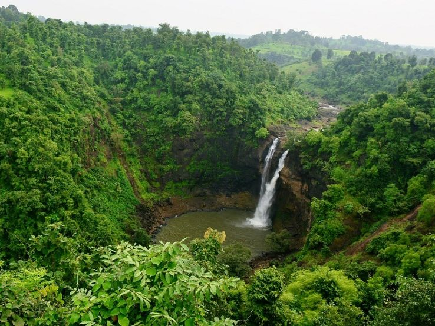

Dugarwadi is a great place to explore the beauty of mother nature especially in the monsoon season. The dense forest, waterfall and the fresh air are all seductive. It totally makes one forget about all the hustle-bustle, stress and tensions of the city life. During rains take utmost care because the water level rises suddenly. To reach the Dugarwadi falls, visitors need to drive up to Sapgon on NH-848, which is about 4 km from Trimbakeshwar. From Sapgon the waterfall parking area is 4 km. After reaching the place, one has to park the vehicles near the road and a walk of 1-2 km is required to reach at the exact place of waterfall.
Timings: no restrictions
